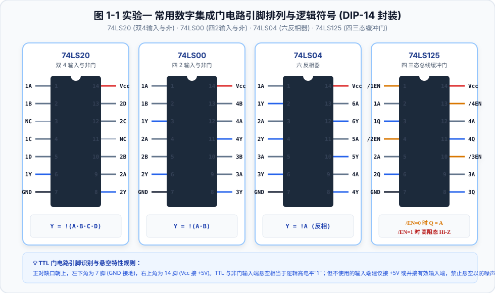
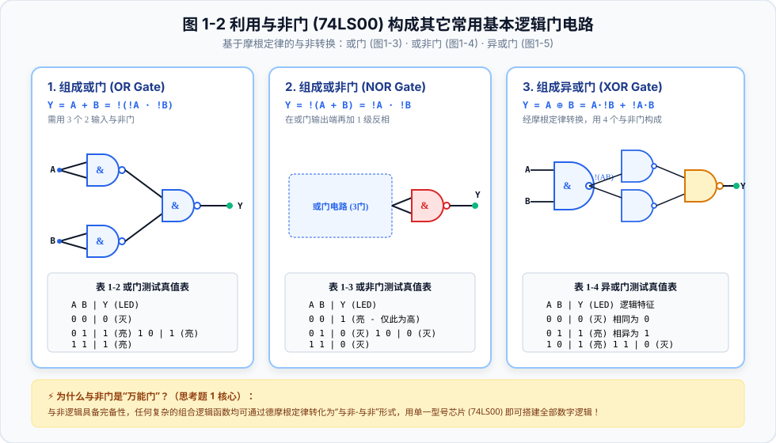
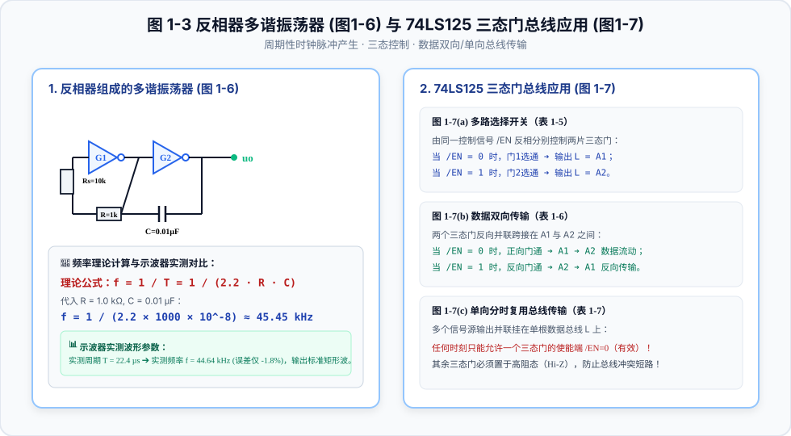
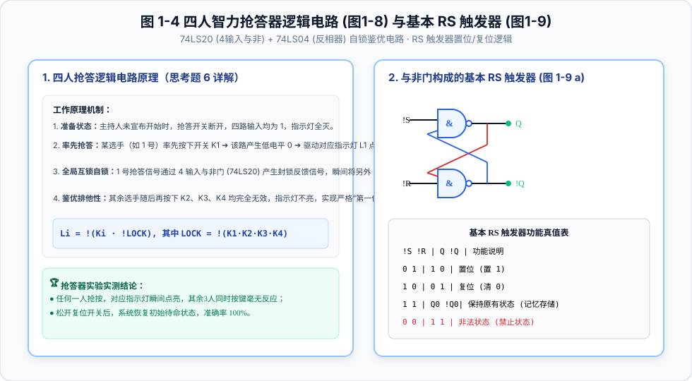

⚡ 模电实验一：综合基础练习

图 1-1 模拟电子实验常用仪器设备连接系统拓扑图

图 1-2 示波器荧光屏坐标测量原理与核心控制旋钮分区

图 1-3 示波器观察正弦信号常见异常波形图解与调节排除秘籍

图 1-4 稳压二极管 (2CW53) 性能测试原理、电路图与伏安特性
数电实验一/二 & 模电实验一/二 · 完整矢量图解、在线逻辑与参数仿真、全套实测数据与实验报告 Word 下载
学习 74LS20、74LS00、74LS04、74LS125 的引脚结构，掌握与非门构建常用逻辑门，掌握反相器多谐振荡器与三态门总线传输。



